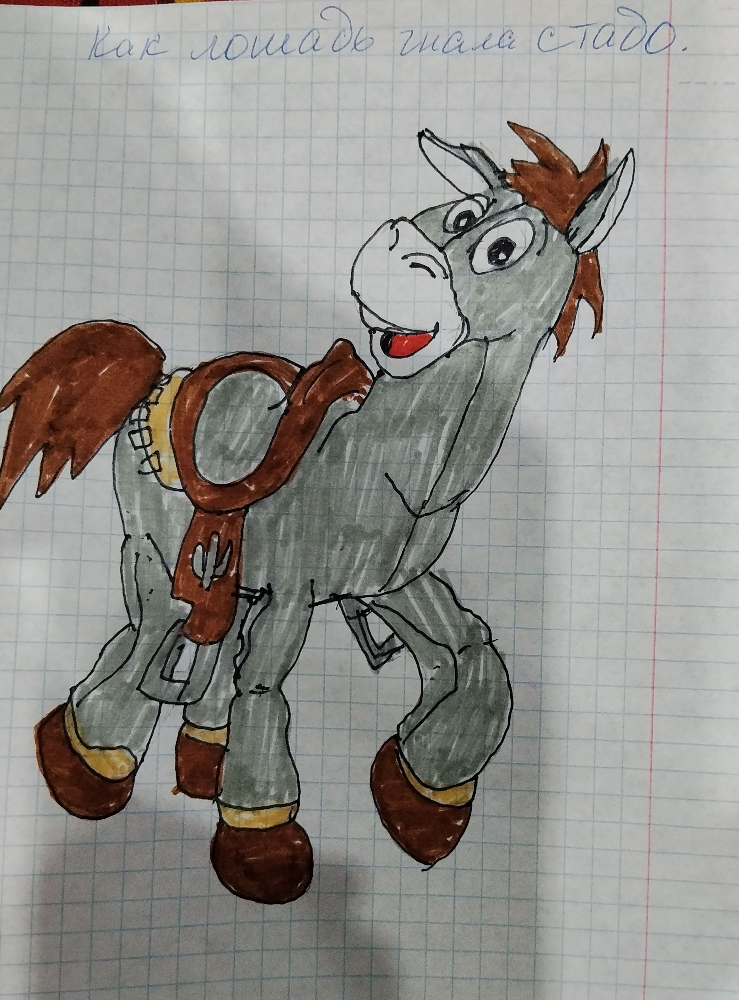

(Рисунок: Лошадь в седле)

Но был у нас один случай, который я запомнила на всю жизнь.
Однажды мы приехали из города поздно вечером. Лошадь была привязана у дачи. Мы её отвязали, и она спокойно шла рядом — пока мы не повернули на нашу улицу.
А у ворот уже стояли корова с телёнком и овцы. Лошадь увидела их — и как дала галоп! Корова увидела, что на неё несётся лошадь, и побежала. За коровой — телёнок, за телёнком — овцы, а за ними — лошадь.
Бабушка кричит: «Остановите их! Остановите!» А они уже несутся по всей деревне. Я — за ними. Лошадь бежала вдоль берега и загнала корову, телёнка и овец на пастбище.
Я бежала долго. Но остановиться не могла — надо же было их вернуть!
Наконец корова устала и остановилась. Лошадь добежала, понюхала её — убедилась, что наша, — и пошла обратно. А мне пришлось вести всех домой: корову, телёнка и овец.
Домой мы вернулись поздно, усталые, но живые. Бабушка только руками всплеснула: «Ну и цирк ты устроила!» А я смеялась — хотя ноги гудели.